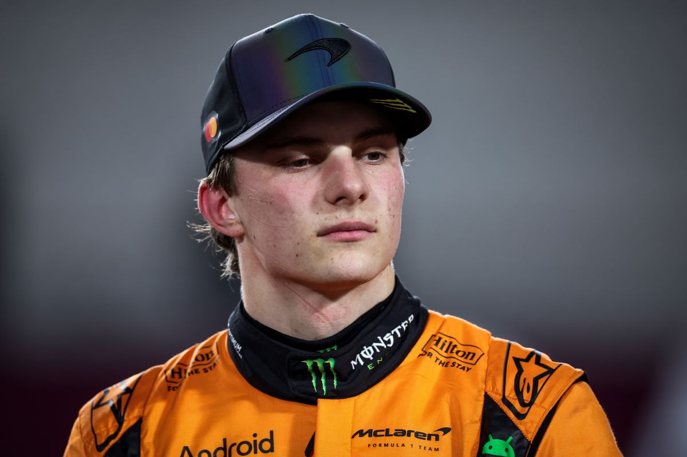

McLaren F1 Team

Historia
McLaren fue fundada en 1963 por Bruce McLaren en Woking, Reino Unido.
Es una de las escuderías más históricas y exitosas de la Fórmula 1, debutando en 1966.
A lo largo de su historia, McLaren ha sido sinónimo de innovación tecnológica y ha tenido algunos de los pilotos más legendarios del deporte.
Palmarés
- 🏆 Campeonatos de Constructores: 8 (1974, 1984, 1985, 1988, 1989, 1990, 1991, 1998).
- 🏆 Campeonatos de Pilotos: 12 (con figuras como Emerson Fittipaldi, James Hunt, Niki Lauda, Alain Prost, Ayrton Senna, Mika Häkkinen y Lewis Hamilton).
- 🥇 Más de 180 victorias en Grandes Premios.
- 🥈 Más de 490 podios.
- 🚀 Pilotos icónicos: Ayrton Senna, Alain Prost, Mika Häkkinen, Lewis Hamilton, Jenson Button.
Pilotos actuales
Lando Norris 🇬🇧

Nacido en 1999 en Bristol, Reino Unido.
Debutó en F1 en 2019 con McLaren y rápidamente se ganó la reputación de ser uno de los pilotos más talentosos de su generación.
Ha conseguido múltiples podios y en 2021 estuvo cerca de su primera victoria en Rusia.
Es muy popular entre los fans por su carisma y estilo de conducción agresivo.
Oscar Piastri 🇦🇺

Nacido en 2001 en Melbourne, Australia.
Campeón de Fórmula 3 (2020) y Fórmula 2 (2021), debutó en la Fórmula 1 con McLaren en 2023.
En su primera temporada ya consiguió un podio y mostró un gran ritmo competitivo.
Considerado una de las grandes promesas del futuro de la F1.
⬅ Volver al inicio